아시아와 아프리카에서
민족 운동이 일어나다
제1차 세계 대전이 끝나자 “각 민족의 운명은 스스로 결정해야 한다”는 민족 자결주의가 널리 퍼졌습니다. 식민 지배를 받던 아시아와 아프리카 사람들은 어떻게 독립을 외쳤을까요?
- 13·1 운동과 5·4 운동의 관련성을 파악할 수 있다.
- 2제1차 세계 대전 이후 인도와 동남아시아에서 전개된 민족 운동을 설명할 수 있다.
- 3제1차 세계 대전 이후 서아시아와 아프리카에서 전개된 민족 운동을 설명할 수 있다.
그때, 그곳에는? 기차에서 쫓겨난 변호사
생각을 나눈 뒤 열어 보기
한국의 3·1 운동과 중국의 5·4 운동
3·1 운동 1919. 3. 1. · 경성(서울) 탑골 공원에서 시작
- 전개
- 수많은 학생과 시민이 탑골 공원에 모여 독립 선언서를 낭독하고 ‘대한 독립 만세’를 외쳤다. 평양 등 주요 도시로, 다시 만주·연해주·일본·미국 등 해외로 퍼져 나갔다.
- 일제의 대응
- 경찰과 군대를 앞세워 만세 시위를 폭력적으로 진압하였다.
- 결과
- 독립운동가들이 중국 상하이에 대한민국 임시 정부를 세워 항일 민족 운동을 이어 갔다. 중국의 5·4 운동 등 다른 나라의 민족 운동에 영향을 주었다.
- 그 뒤
- 사회주의 사상이 퍼지면서 독립운동가들은 민족주의 진영(실력 양성 운동)과 사회주의 진영(농민·노동자 중심의 사회 운동)으로 나뉘었다.
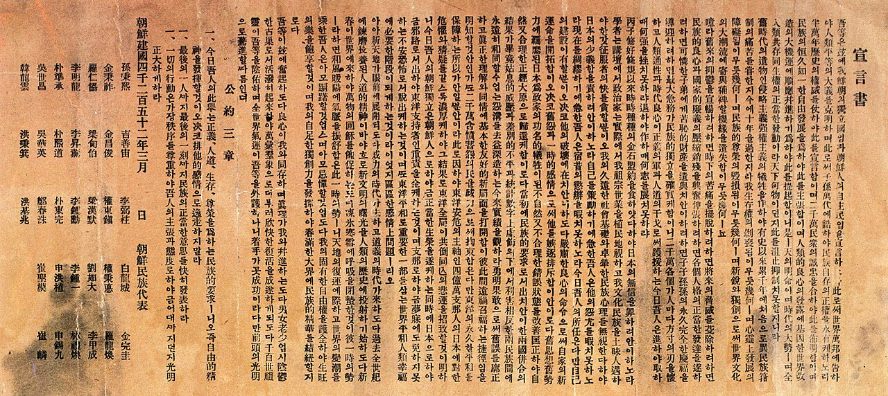
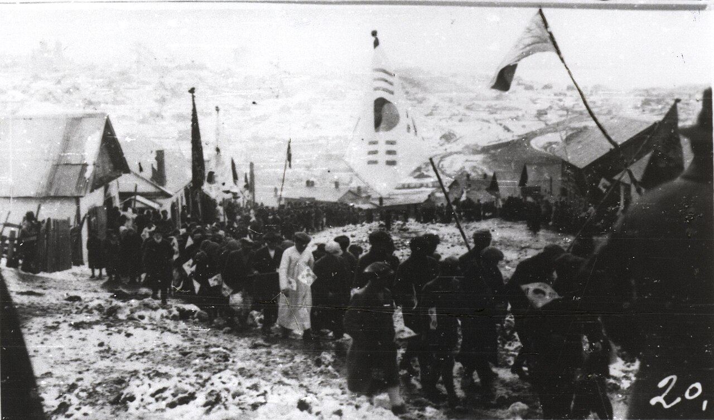
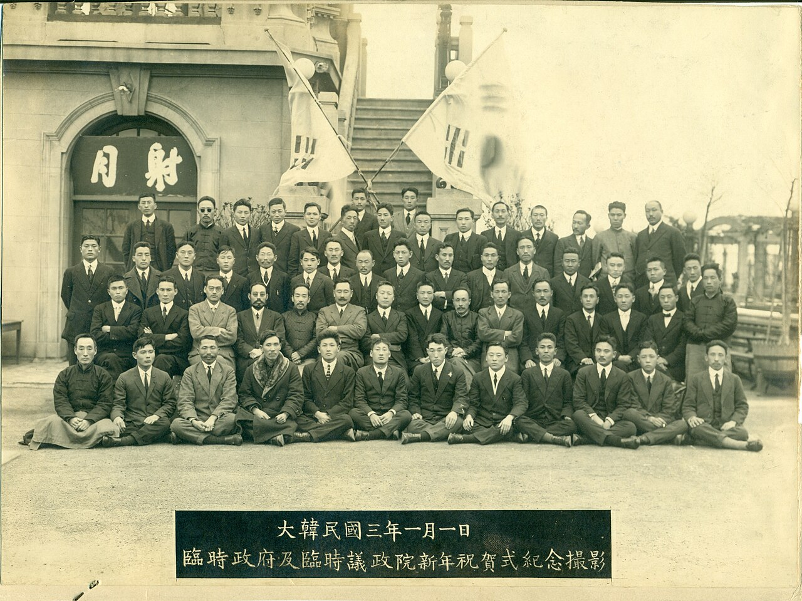
5·4 운동 1919. 5. 4. · 베이징 톈안먼 광장
- 배경
- 제1차 세계 대전 중 일본이 중국에 21개조 요구(독일이 가졌던 산둥반도의 이권을 넘기라는 요구 등)를 강요했고, 중국 정부는 이를 받아들였다. 파리 강화 회의에서 중국이 무효를 주장했지만 승전국들은 받아들이지 않았다.
- 전개
- 베이징의 학생들을 중심으로 산둥반도의 이권 반환, 21개조 요구 철폐, 친일파 처벌을 요구하였다.
- 그 뒤
- 국민당과 공산당이 결성되어 민족 운동을 이끌었다. (아래 연표)
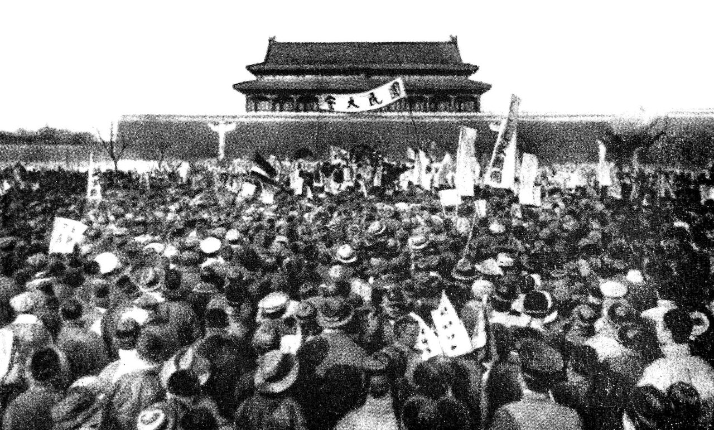
- 19195·4 운동 → 이후 국민당과 공산당 결성
- 1924제1차 국공 합작 · 쑨원의 국민당이 군벌과 제국주의 열강을 물리치려고 공산당과 손잡음
- 1927쑨원의 뒤를 이은 장제스가 공산당을 탄압 → 제1차 국공 합작이 깨짐
- 1928장제스가 군벌을 무너뜨리고 중국 통일
- 1937일본이 중일 전쟁을 일으킴 → 제2차 국공 합작으로 다시 손잡고 일본군에 대항
5·4 운동 때 베이징의 학생들이 뿌린 글의 한 부분입니다.
산둥이 망하면 중국도 망합니다. 조선에서는 독립을 꾀하면서 “독립이 아니면 차라리 죽음을 달라.”라고 외쳤습니다.
예시 답안 보기
인도와 동남아시아의 민족 운동
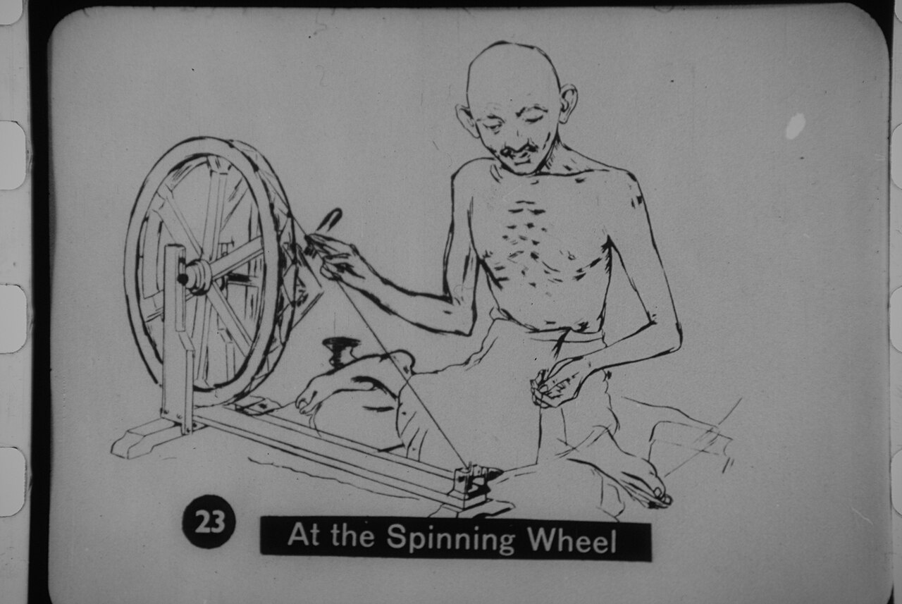
간디 · 비폭력·불복종 운동
영국 상품을 사지 않고, 세금 납부를 거부하는 등 폭력을 쓰지 않고 따르지 않는 방법으로 저항했다.
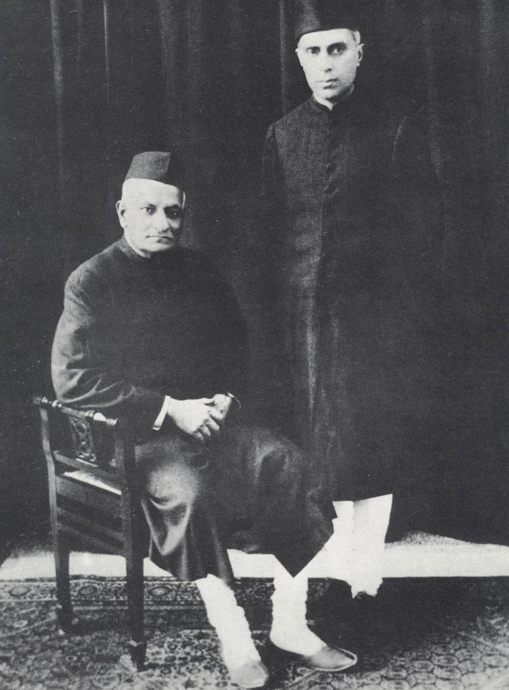
네루 · 인도 독립 동맹
인도의 완전한 독립을 주장하며 인도 독립 동맹을 만들었다.
결과 · 인도의 민족 운동이 전국으로 퍼지자 영국은 제한된 범위에서 인도 각 주의 자치권을 인정하였다.
동남아시아: 약속을 어긴 식민 본국에 맞서다

호찌민
독립을 조건으로 제1차 세계 대전에서 프랑스를 도왔지만, 프랑스는 약속을 지키지 않았다. 호찌민은 베트남 공산당을 창설하여 프랑스에 저항했다.
사진: 1946년 무렵 · 퍼블릭 도메인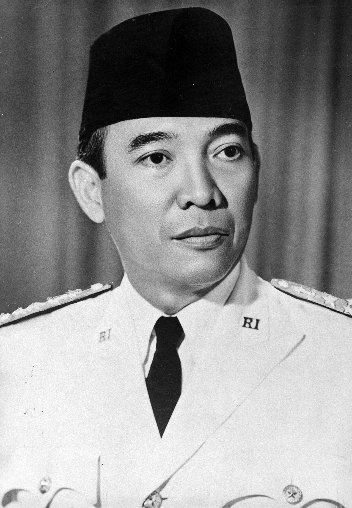
수카르노
오랫동안 네덜란드의 통치를 받았던 인도네시아에서 인도네시아 국민당을 만들어 민족 운동을 이끌었다.
사진: 대통령 시절 공식 초상 · 퍼블릭 도메인더 알아보기 · 인물로 보는 동남아시아의 민족 운동 (교과서 209쪽)
필리핀의 아기날도 – 미국·에스파냐 전쟁 때 독립을 약속한 미국을 도왔으나, 미국이 필리핀을 식민지로 삼자 독립운동을 이끌었다.
인도네시아의 카르티니 – 독립하려면 ‘어머니가 될 여성을 위한 교육’이 중요하다며 여학교를 세웠다.
간디 · 비폭력·불복종 운동
호찌민 · 공산당을 창설하여 프랑스에 저항
수카르노 · 국민당을 만들어 네덜란드에 저항
네루 · 완전한 독립을 주장하며 독립 동맹 창설
서아시아와 아프리카의 민족 운동
① 튀르키예 공화국의 수립
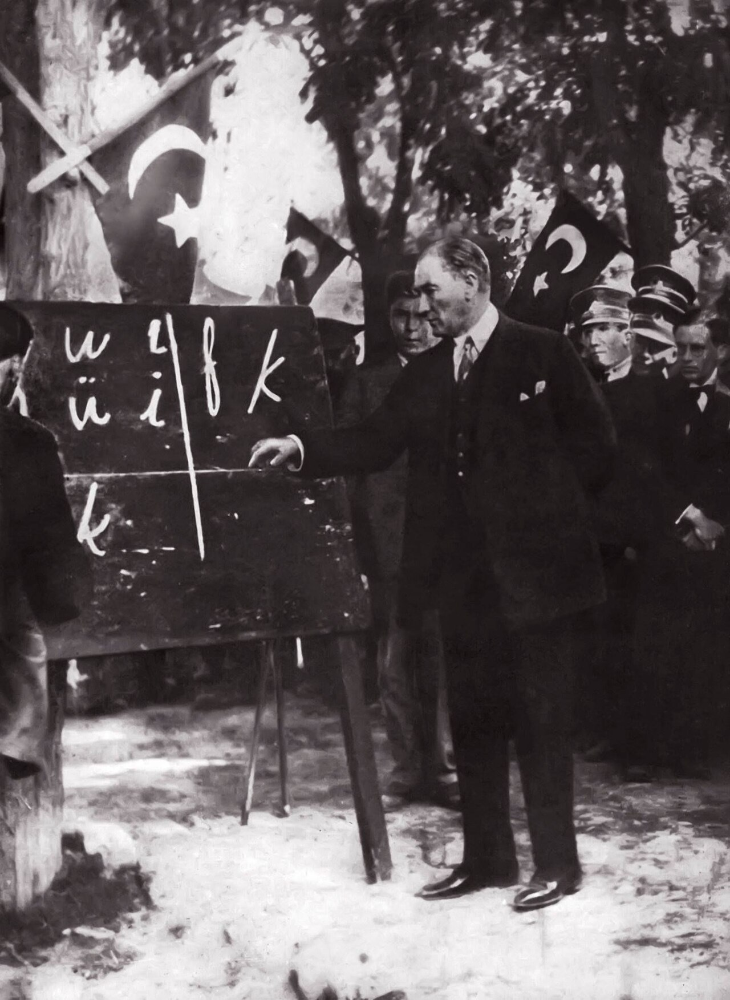
제1차 세계 대전에서 동맹국 편에 섰던 오스만 제국은 패전국이 되어 영토의 많은 부분을 잃고 연합국의 간섭을 받았습니다. 이에 무스타파 케말이 개혁을 이끌었습니다.
- 1922술탄 제도 폐지
- 1923튀르키예 공화국 수립, 첫 번째 대통령이 됨
- 이후칼리프 제도 폐지, 튀르키예 문자 창제, 여성 참정권 인정 등 근대화 개혁
② 팔레스타인을 둘러싼 갈등: 영국의 두 가지 약속
제1차 세계 대전 중 영국은 오스만 제국을 견제하려고 아랍인과 유대인 모두에게 다가갔습니다. 각 약속이 누구에게 한 것인지 골라 봅시다.
1915 · 맥마흔 선언 “영국을 도와주면 독립을 지지하겠다.”
1917 · 밸푸어 선언 “팔레스타인에 나라를 세우는 일을 도와주겠다.”
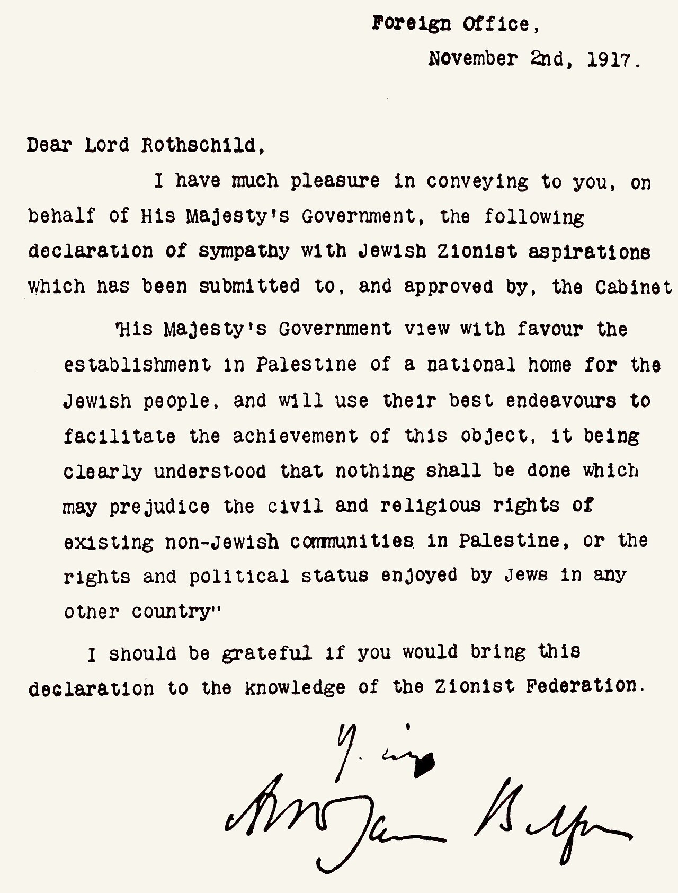
예시 답안과 오늘날의 모습 보기
오늘날 · 1948년 유대인들이 이스라엘을 세우자 제1차 중동 전쟁이 일어났고, 이스라엘이 이겨 영토를 넓혔다. 이후 팔레스타인 난민들의 저항이 이어졌고, 분쟁은 오늘날까지 계속되고 있다.
③ 아프리카의 민족 운동
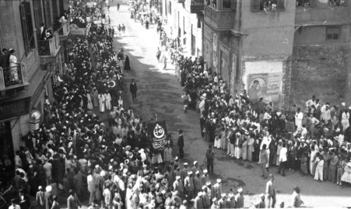
이집트 · 반영 운동
영국의 지배에 저항하는 반영 운동이 일어났다. 영국은 수에즈 운하의 관리권과 군대 주둔권을 유지하는 조건으로 이집트의 독립을 인정했다(1922).
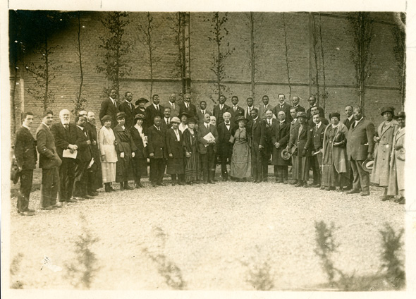
사하라 남쪽 · 범아프리카주의
아프리카의 통일을 추구하는 범아프리카주의가 퍼졌다. 아프리카인들은 스스로의 힘으로 독립하여 아프리카 대륙을 통일하고자 노력했다.
생각해 보기 · 이집트의 독립은 ‘완전한’ 독립이었을까?
배운 내용을 확인해요
1. 한국의 독립운동가들은 3·1 운동 이후 민족주의 진영과 진영으로 나뉘었다.
2. 3·1 운동 이후 독립운동가들은 중국 상하이에 을/를 세웠다.
3. 인도의 은/는 비폭력·불복종 운동의 방식으로 민족 운동을 이끌었다.
4. 네덜란드의 통치를 받던 인도네시아에서는 이/가 인도네시아 국민당을 만들었다.
5. 영국이 아랍인의 독립을 지지하겠다고 약속한 것은 이다.
6. 사하라 사막 남쪽에서는 아프리카의 통일을 추구하는 이/가 퍼졌다.
설명에 맞는 말을 문자표에서 찾아 글자를 차례로 눌러 보세요. 맞으면 색이 칠해집니다. (가로 또는 세로)
- 1919년 한국에서 일어난 민족 운동
- 국민당과 공산당이 제국주의 열강에 맞서려고 두 차례 맺은 연합
- 인도 독립 동맹을 만든 인물
- 베트남 공산당을 창설한 인물
- 인도네시아 국민당을 만들어 민족 운동을 이끈 인물
- 제1차 세계 대전 이후 무스타파 케말이 수립한 공화국
세계 대전과 사회 변동, 한 번에 정리하기
세계 대전과 국제 질서
제1차 세계 대전: 3국 동맹과 3국 협상의 대립, 사라예보 사건 → 베르사유 조약
제2차 세계 대전: 전체주의 국가 등장 → 국제 연합(UN) 창설
전쟁 범죄와 평화 노력
난징 대학살, 홀로코스트, 일본군 ‘위안부’
→ 뉘른베르크 재판, 극동 국제 군사 재판, 평화 조약, 박물관·기념관
아시아·아프리카의 민족 운동
3·1 운동, 5·4 운동, 비폭력·불복종 운동
튀르키예 공화국, 범아프리카주의
1. 다음 흐름의 (가), (나)에 들어갈 말을 골라 보세요.
(가)
(나)
2. 민족, 국가, 개인이라는 단어를 모두 넣어 전체주의의 뜻을 써 보세요. 서술형
예시 답안 보기
교과서 213쪽 모의재판: 모둠별로 전쟁 범죄를 일으킨 인물을 골라 검사·변호인·피고인·판사 역할을 나누고, 사건 설명 → 질문과 답 → 최후 변론 → 판결 순서로 재판을 진행합니다. 지난 시간에 쓴 아이히만 반박 글을 검사 원고로 활용해 보세요.
3·1 운동과 5·4 운동의 관련성(STEP 2), 팔레스타인 갈등(STEP 4), 전체주의 서술과 한 줄 성찰, 빈칸·문자표·분류 결과가 한 번에 제출됩니다. 고쳐서 다시 제출해도 괜찮아요(마지막 제출을 기준으로 봅니다).
다음 시간부터는 Ⅶ. 현대 세계의 전개와 과제 — 냉전 체제가 형성되다를 배웁니다.